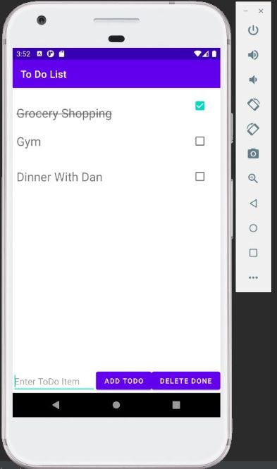

Step Counter Application
My second attempt at a android application involved something a little more complex. The step counter application.
The step counter application does exaclty as stated. The application counts the amount of steps the user takes while the app is running.
/*ADD TEXT HERE*/
Source code here(Change Link)
Technologies:
- - Kotlin
- - Android Studio
- - XML
Sample Application Run(Change Photo)
